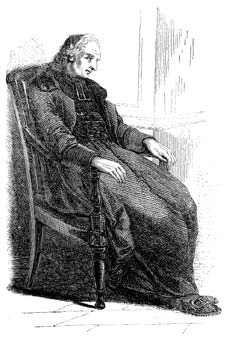
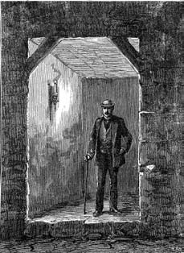

20 Aralık 1898
Mezarlık Protokolleri adıyla evimde sakladığım bütün materyali Golovinski'ye teslim ettikten sonra, kendimi bomboş kalmış hissettim. Aynen gençliğimdeki mezuniyetimden sonra olduğu gibi kendi kendime soruyordum: "Ya şimdi ne olacak?" Bölünmüş bilincimi de iyileştirmiştim; artık kendimi anlatacak kimsem de kalmamıştı.
Torino'daki tavan arasında Dumas'nın Balsamo'sunu okuyarak başlayan bir ömürlük çalışmayı sonlandırdım. Dedemi, onun Mordechai'ın hayaletini yâd ederek boşluğa diktiği gözlerini düşünüyorum. Benim çalışmam sayesinde bütün dünyanın Mordechai'ları şimdi ihtişamlı ve korkunç bir ateşe doğru yürüyorlar. Ya ben? Görevin tamamlanmış olmasının verdiği bu hüzün, gemilerde tadılandan çok daha geniş ve soyuttu.
Sahte vasiyetler düzenlemeye, haftada birkaç kutsal ekmek satmaya devam ediyorum ama Hébuterne beni artık aramıyor; belki de çok yaşlı olduğumu düşünüyordur; ordudan ise hiç söz etmeyelim; beni hatırlayan birkaç kişi kaldıysa bile onların da zihninden adımı silmişlerdir. Sandherr hastanenin birinde felçli yatıyor, Esterhazy Londra'nın lüks bir batakhanesinde bakara oynuyordur.
Paraya gereksinmem olduğundan değil; yeterince biriktirmiştim ama canım sıkılıyor. Mide rahatsızlıklarım olduğundan artık güzel yemeklerle de avunamıyorum. Evde et suyuna çorba yapıyorum, lokantada yersem bütün gece uyku tutmuyor. Bazen de kusuyorum. Her zamankinden daha çok idrara çıkıyorum.
Libre Parole'e gitmeyi sürdürüyorum ama Drumont'un antisemitik öfkesi artık beni heyecanlandırmıyor. Prag Mezarlığı'nda olup bitenler üzerinde şimdi Ruslar çalışıyor.
Dreyfus olayı yavaş yavaş kaynamayı sürdürüyor, bugün La Croix gibi ateşli bir Dreyfus karşıtı gazetede Dreyfus yanlısı bir Katolik'in beklenmedik müdahalesi gürültü kopardı (La Croix'nın Diana'yı savunduğu günler ne güzeldi, heyhat!). Dün ilk sayfalar Concorde meydanında yapılan Yahudi karşıtı gösterinin haberleriyle doluydu. Bir mizah dergisinde Caran d'Ache iki kareli bir vinyet yayımladı: Birincisinde kalabalık ve mutlu bir aile keyifle sofrada oturuyor ve aile reisi Dreyfus konusundan söz etmemelerini tembihliyor; ikinci karenin altında konuştukları belirtiliyor ve öfkeli bir dalaş içine girdikleri görülüyor.
Olay Fransızları ve şurada burada yazdığına göre bütün dünyayı ikiye bölmüş durumda. Dava yeniden görülecek mi? Bu arada Dreyfus hâlâ Cayenne Adası'nda. Otursun orada.
Peder Bergamaschi'ye gittim, onu yaşlanmış ve yorgun gördüm. Ne olacaktı ki; ben altmış sekiz yaşındaysam, o da seksen beş olmuştur.

Peder Bergamaschi'ye gittim, onu yaşlanmış ve yorgun gördüm.
"Ben de sana veda etmek istiyordum Simonino" dedi bana. "Günlerimi evlerimizin birinde sonlandırmak için İtalya'ya dönüyorum. Tanrı rızası için çok bile çalıştım. Sen hâlâ fazla entrikaya karışmıyor musun? Benim artık entrikalardan ödüm patlıyor. Dedenin zamanında her şey nasıl pırıl pırıldı; Carbonari üyeleri bir tarafta, biz bir taraftaydık; kimin kim olduğu, düşmanın nerede durduğu belliydi. Ben de artık eski ben değilim."
Zihni bulanmıştı. Onu kardeşçe duygularla kucakladım ve çekip gittim.
* * *
Dün akşam Saint-Julien le Pauvre Kilisesi'nin önünden geçiyordum. Giriş kapısının yanında bir insan kalıntısı oturuyordu; kör bir cul-de-jatte, mor yara izleriyle kaplı kel başının bir burun deliğine soktuğu flütten kesik ezgiler çıkartıyor, öteki burun deliğiyle boğuk bir ses yayıyor, ağzı da boğulmak üzere olan bir insan gibi açılıp kapanıyordu.
Neden bilmem ama korktum. Sanki hayat kötü bir şeymiş gibi.
* * *
Derin uyuyamıyorum, huzursuz rüyalarıma saçı başı dağınık, solgun yüzlü Diana giriyor.
Sabahın çok erken saatlerinde sık sık izmarit toplayıcılarının ne yaptığını görmek için çıkıyorum. Buna her zaman bayılmışımdır. Sabahın o ilk saatlerinde bir iple bellerine bağladıkları pis kokulu torba ve izmarit masa altında bile olsa zıpkınlayabilmek için kullandıkları ucu demirli bir sopa ile dolaşıyorlar. Açık hava kafelerinden garsonların tekmeleriyle nasıl kovalandıklarını, soda püskürtücüleriyle ıslatıldıklarını seyretmek eğlenceli oluyor.
Çoğu geceyi Sen kıyısında geçiriyor; sabah quai'lerine oturuyorlar, hâlâ tükürükten ıslak olan otu külden ayırıyor ya da tütün kirlisi gömleklerini yıkayıp güneşe seriyor ve bir yandan işlerini sürdürüyorlar. Bazıları da sadece puro değil sigara izmariti de topluyorlar ama bunların ıslak kâğıdını tütünden ayırmak iyice iğrenç bir iş oluyor.
Sonra mallarını satmak için sürü halinde Maubert Meydanı'na ve çevresine üşüşüyorlar; üç beş kuruş kazanınca da zehirli içkilerini içmek için bir meyhaneye giriyorlar.
Vakit geçirmek için başkalarının hayatlarını seyrediyorum. Emekli hayatı yaşıyorum ya da hayat artığı.
* * *
Tuhaf ama sanki Yahudileri özler gibiyim. Yokluklarını hissediyorum. Gençliğimden beri, adeta taş üstüne taş koyarak Prag Mezarlığı'mı kurdum ve sanki şimdi Golovinski onu benden çalmış gibi geliyor. Moskova'da kim bilir ne hale koyacaklar onu. Belki de protokollerimi o özgün çevresel anlatımından sıyırarak kuru ve bürokratik bir belgede toplayacaklardır. Hiç kimse okumak istemeyecek; o zaman hayatımı amaçsız bir tanıklık üretmek için harcamış olacağım. Ya da belki benim hahamlarım (onlar her zaman için benim hahamlarım) dünyaya dağılacaklar ve nihai çözüme eşlik edecekler.
* * *
Bir yerlerde okuduğuma göre Flandre Caddesi'nde, eski bir avlunun dibinde Portekiz Yahudilerinin mezarlığı varmış. On yedinci yüzyılın sonundan beri orada Camot adında birine ait bir otel yükseliyordu ve bu şahıs –ağırlıklı olarak Alman asıllı– Yahudilere ölülerini buraya gömmeleri için izin veriyor ve karşılığında yetişkinlerden elli, çocuklardan yirmi frank alıyordu. Otel daha sonra Matard adında birinin eline geçti; hayvan derilerini yüzerek hayatını kazanan bu adam Yahudilerin yanına soyduğu atları, öküzleri gömmeye başlayınca Yahudiler buna itiraz ettiler; Portekiz Yahudileri kendi ölülerini gömmek için yakınlarda ayrı toprak satın aldılar; kuzey ülkelerine ait Yahudiler ise cenazeleri için Montrouge'da bir arazi bulmuşlardı.
Mezarlık bu yüzyılın başında kapanmıştı ama hâlâ içine girilebiliyor. Kimi İbranice kimi Fransızca yazılı yirmi kadar mezar taşı kalmış. Gördüğüm ilginç bir taşta şöyle yazıyordu: "Yüce Tanrım beni hayatımın yirmi üçüncü yılında yanına çağırdı. Bu durumu esarete yeğliyorum. Burada mutlu Samuel Fernandez Patto yatıyor; tek ve bölünmez Fransız Cumhuriyeti'nin ikinci yılında, Cumhuriyet takviminin dokuzuncu ayının yirmi sekizinde öldü." İşte, Cumhuriyetçiler, ateistler ve Yahudiler hep birlikteydiler.
Mekân pek kasvetli ama sadece resimlerini gördüğüm Prag Mezarlığı'nı gözümde canlandırmaya yaradı. İyi bir anlatıcı olmuşum, iyi bir sanatçı olabilirmişim: Elimdeki pek az bilgiyle büyülü bir yer; ay ışığı altındaki evrensel komplonun karanlık merkezini iyi yaratmıştım. Neden yararlanmadım ki bu yaratıcılığımdan? Daha kim bilir neler yapabilirdim!
* * *
Raçkovski geri geldi. Bana hâlâ ihtiyacı olduğunu söyledi. Tedirgin oldum: "Anlaşmalara sadık kalmıyorsunuz. Konuyu kapattığımızı sanıyordum" dedim. "Ben size hiç görülmemiş malzeme verdim, siz de benim lağımı örtbas ettiniz. Aslında sizden hâlâ alacaklı olan benim. Böyle değerli bir malzemenin bedavaya gideceğini sanmıyorsunuz herhalde."
"Anlaşmaya sadık kalmayan sizsiniz. Belgeler benim sessizliğimi ödüyordu. Şimdi bir de para istiyorsunuz. Tamam, tartışmıyorum, o halde belgelerin karşılığında ödeme yaparım ama lağım konusundaki sessizliğimi korumam için siz bana hâlâ borçlu olursunuz. Hem sonra Simonini, pazarlık etmeyelim, benim tepemi attırmak işinize gelmeyebilir. Bordereau'nun özgünlüğünü kabul etmenin Fransa için önemli olduğunu söylemiştim size ama Rusya için böyle değil. Sizi basına yem etmek benim için çocuk oyuncağı. Hayatınızın geri kalanını mahkeme salonlarında geçirirsiniz. Ah, unutuyordum. Geçmişinizi araştırırken Bergamaschi adındaki şu rahiple ve Bay Hébuterne ile konuştum ve bana anlattıklarına göre siz onları Taxil olayını kurgulayan Dalla Piccola adında bir rahiple tanıştırmışsınız. Bu rahibi bulmaya çalıştım ama sanki Auteuil'deki bir evde Taxil konusunda ona yardım eden herkesle birlikte buhar olup havaya karışmış gibi. Bir tek Taxil, bu rahibi bulabilmek için Paris'te fır dönüyor. Sizi onu öldürmüş olmakla da suçlayabilirim."
"Ortada ceset yok ki."
"Olsun, aşağıda dört tane var nasılsa. Kanalizasyon çukuruna dört ceset atan, beşinciyi de bir yere saklamış olabilir."
Bu berbat adamın eline düşmüştüm. "Tamam" diyerek duruma rıza gösterdim. "Daha ne istiyorsunuz?"
"Golovinski'ye verdiğiniz malzemenin içinde beni çok etkileyen bir süreç var: büyük kentleri bombalamak için yeraltı trenlerini kullanmak. İyi ama bombaların yeraltında patlatılması nereden çıktı şimdi?"
"Nerede, Londra'da mı? Burada daha metro sistemi kurulmadı ki."
"Ama kazılar başladı, Sen boyunca delikler açıldı. Paris'in havaya uçmasına ihtiyacım yok benim. İki üç dayanak kirişi devrilsin, zeminden birkaç taş kopsun yeter. Küçük bir patlama bile bir tehdit ve onay anlamına gelecektir."
"Anladım. İyi ama bunun benimle ne ilgisi var?"
"Patlayıcıları daha önce kullanmışlığınız var, elinizin altında uzmanlar da bulunur. Olayları kendi çizgisinde göz önünde bulundurun. Bence her şey kazasız gerçekleşmeli, çünkü geceleri bu ilk kazılara bekçi bırakmıyorlar. Ama olur da şanssızlık sonucu suikastçı yakalanırsa şöyle olur: Fransız ise birkaç yıl hapis yatar, Rus ise Fransa-Rusya savaşı patlar. Bu nedenle benim adamlarından birini kullanamayız."
Tepemi attırmak üzereydi ve ben buna karşı çıkmalıydım, çünkü benim gibi sakin ve yaşlı bir adamı böyle mantıksız bir işe sürüklememeliydi. Ama kendimi engelledim. Artık başkahraman olamadığım için haftalardan beri hissettiğim boşluk duygusu neden kaynaklanıyordu?
Bu görevi de kabul ederek gene cepheye dönüyordum. Prag Mezarlığı'ma inanılırlık katmak, onu daha gerçekçi kılmak, şimdiye dek hiç olmadığı kadar sahici oldurmak için işbirliği yapacaktım. Bir kez daha, tek başıma bir ırkı alt etmek üzereydim.
"Doğru insanla konuşmalıyım" yanıtını verdim. "Size birkaç gün içinde haber veririm."
* * *
Gaviali'yi arayıp buldum; hâlâ eskici olarak çalışıyor ama yardımlarım sayesinde artık temiz belgeleri ve kenarda birkaç kuruş parası var. Ne yazık ki beş yıl geçmeden korkunç derecede yaşlanmış – Cayenne izlerini bırakmış. Elleri titriyor ve cömertçe defalarca doldurduğum bardağını zor tutuyor. Zor hareket ediyor, neredeyse eğilemiyor bile; nasıl çöp topladığını merak ettim.
Önerime heyecanla karşılık veriyor: "Artık eskisi gibi değil, o zamanlar sana uzaklaşma fırsatı vermediği için bazı patlayıcıları kullanamazdık. Şimdi iyi bir saatli bombayla her şey yapılabiliyor."
"Nasıl işliyor?"
"Çok basit. Herhangi bir çalar saat alınıyor, istenen saate ayarlanıyor. Vakit gelince saatin yayı atıyor ve zili çaldıracağına –iyi bağlanmışsa– bir patlatıcıyı tetikliyor. Patlatıcı bombayı patlatıyor, oluyor bitiyor. Siz o sırada on mil uzakta oluyorsunuz."
Ertesi gün basit ama korkunç bir zımbırtı ile bana geldi: Bu karmakarışık kablolar ve papaz şapkasını andıran alet nasıl olur da patlama yaratırdı? Ama oluyor işte, diyordu Gaviali gururla.
İki gün sonra meraklı vatandaş pozunda, yürütülmekte olan kazılara bakmaya gittim; işçilere de birkaç soru sordum. Yol seviyesinden bir alt seviyeye inmenin en kolay olduğu noktanın, galerinin kirişlere dayanan çıkış kapısında olduğunu öğrendim. Bir yere ulaşıyorsa bile bu tünelin nereye gittiğini bilmek istemiyordum: Bombayı girişe koymak yetecekti.

Bir yere ulaşıyorsa bile bu tünelin nereye gittiğini bilmek istemiyordum: Bombayı girişe koymak yetecekti.
Gaviali'ye ciddi bir tavırla karşılık verdim: "Bilginizden asla kuşkum yok ama elleriniz titriyor, ayakta zor duruyorsunuz; nasıl ineceksiniz o yerin altına ve hazırlık yapacaksınız?"
Gözleri yaşardı: "Doğru, ben artık bitik bir adamım."
"Bu işi sizin yerinize yapabilecek kimse yok mu?"
"Artık kimseleri tanımıyorum, unutmayın ki en iyi dostlarım hâlâ Cayenne Adası'nda bulunuyorlar ve bizi oraya yollayan sizdiniz. Bu nedenle sorumluluğunuzun farkında olun. Bombayı patlatmak mı istiyorsunuz? Gidip siz yerleştirin onu oraya."
"Aptal aptal konuşmayın. Ben uzman değilim ki."
"Birisi size öğretirse, uzman olmaya gerek yok. Şu masaya dizdiklerime bakın: bunlar saatli bombayı patlatmaya yarayan gereçler. Herhangi bir çalar saatin iç mekanizması bombayı istenen anda patlatır. Sonra alarm çalınca patlatıcıyı harekete geçirecek bir pil. Ben eski zaman adamı olduğum için Daniell Cell denen bu pili kullanıyorum. Bu tip pilde, Volta pilinden farklı olarak sıvı elementler kullanılır. Küçük bir hücre yarı yarıya bakır sülfat ve çinko sülfat ile doldurulur. Bakır katmana bakır, çinko katmana çinko uç konur ve bunlar pilin iki ucunu temsil ederler. Anladınız mı?"
"Şimdilik evet."
"Tamam. Tek sorun şu ki, Daniell Cell pilini taşıma sırasında dikkatli olmak gerekir ama patlatıcıya ve yaya bağlı olmadığı sürece hiçbir şey olmaz; bağlantı kurulunca bir düz yüzeye konmalıdır; bunu yapmayı bilmeyen zaten aptalın teki demektir. Patlatıcı için en küçük bir elektrik yükü yeter. Nihayet gerçek yüke geliyoruz. Bir zamanlar, hatırlarsınız ben kara barutu severdim. On yıl önce, balistit barut geliştirildi; nitrogliserin, kâfuru ve kolodyum eşit miktarlarda yüzde onu oluştururdu. Başlangıçta kâfurunun kolay uçuculuğu yüzünden ürün stabil kalmıyordu ama İtalyanlar Avigliana'da üretmeye başladıklarından beri güvenilir bir hal aldı. Kullanıp kullanmamakta kararsızım, çünkü İngilizler kordit adında yeni bir patlayıcı buldular: kâfuru yerine yüzde elli vazelin kullanıp geri kalan yüzde elli sekizi nitrogliserin ve otuz yediyi de asetonda eritilmiş yanıcı pamukla tamamladılar; bütün bunlar sert spagettiler gibi haddeden geçiriliyor. Şimdi ne seçeceğime karar vereceğim ama zaten aralarında az fark var. Her şeyden önce akrep ve yelkovanı belirlenen saate ayarlamalıyız, sonra çalar saati pile, bunu patlatıcıya, bunu bombaya bağlayıp saati kurmalıyız. Aman ha, işlemin sırası asla değişmemeli, çünkü eğer önce biri bağlantıyı ters kurarsa, zamanından önce bum... Anladınız mı? Sonra ister eve, ister tiyatroya, ister lokantaya gidin: Bomba her şeyi tek başına yapacaktır. Anlaşıldı mı?"
"Anlaşıldı."
"Yüzbaşım, bunu bir çocuğun bile becerebileceğini söylemeye cesaret edemem ama eski bir Garibaldi komutanının becereceğinden kuşkum yok. Eliniz titremiyor, gözünüz iyi görüyor, sadece size söylediğim işlemleri yapmanız gerekiyor. Yeter ki doğru sıralamayla yapın."
* * *
Kabul ettim. Başarırsam, ansızın gençleşmiş olacağım, bu dünyanın bütün Mordechai'ları önümde diz çökecekler. Ve Torino gettosunun fahişesi de. Gagnu, ha? Göstereceğim ben sana.
Bir buçuk yıldan beri sıcak yaz gecelerinde peşimi bırakmayan ateşli Diana kokusunu üzerimden silmeye ihtiyacım var. Şimdi farkına varıyorum ki, var olma nedenim tamamen bu lanet olası ırkı alt etmek içinmiş. Raçkovski haklı, yüreği sadece nefret ısıtıyormuş.
Görevimi ona layık bir üniformayla yerine getirmeliyim. Juliette Adam'ın evindeki partilere giderken giydiğim frakı giydim ve sakalı taktım. Neredeyse rastlantıyla dolaplarımın birinin dibinde Doktor Froïde'dan almış olduğum Parke & Davis marka kokain buldum. Kim bilir nasıl oldu da kaldı orada. Hiç denememiştim ama eğer haklıysa, bana itici güç sağlayacaktır. Üzerine üç bardak da konyak içtim. Şimdi kendimi aslan gibi hissediyorum.
Gaviali benimle gelmek istiyor ama ona izin vermeyeceğim, çünkü ağır aksak hareketleriyle bana ayak bağı olabilir.
Olayın nasıl işlediğini iyice anladım. Öyle bir noktaya koyacağım ki bombayı, bir dönemin sonu olacak.
Gaviali bana son uyarılarda bulunuyor: "Şuna dikkat edin, buna dikkat edin."
Yok artık; daha o kadar bunamadım.